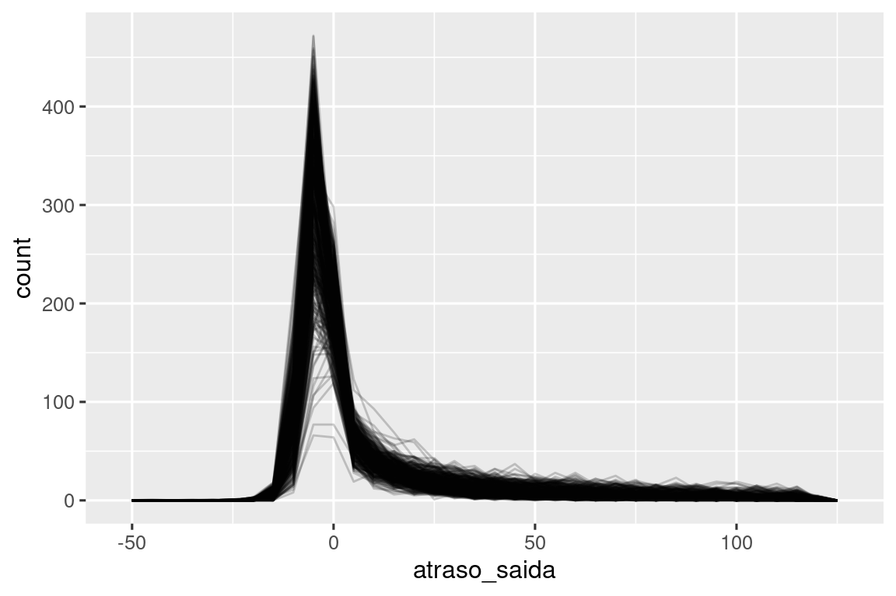

13 Números
13.1 Introdução
Vetores numéricos são a espinha dorsal da ciência de dados e você já os usou muitas vezes anteriormente neste livro. Agora é hora de pesquisar sistematicamente o que você pode fazer com eles em R, garantindo que você esteja bem situado para resolver qualquer problema futuro envolvendo vetores numéricos.
Começaremos fornecendo algumas ferramentas para criar números se você tiver textos (strings) e depois entraremos em mais detalhes sobre count(). Em seguida, mergulharemos em várias transformações numéricas que combinam bem com mutate(), incluindo transformações mais gerais que podem ser aplicadas a outros tipos de vetores, mas são frequentemente usadas com vetores numéricos. Terminaremos abordando as funções de sumarização que combinam bem com summarize() e mostraremos como elas também podem ser usadas com mutate().
13.1.1 Pré-requisitos
Este capítulo usa principalmente funções do R base que estão disponíveis sem precisarmos carregar nenhum pacote. Mas ainda iremos carregar o pacote tidyverse pois usaremos estas funções do R base dentro de funções do tidyverse como mutate() e filter(). Como no capítulo anterior, usaremos exemplos reais do pacote dados, bem como exemplos simples feitos com c() e tribble().
13.2 Criando números
Na maioria dos casos, você obterá números já registrados em um dos dois tipos do R: inteiro (integer) ou ponto-flutuante (double), . Em alguns casos, você irá encontrá-los como textos (strings), possivelmente porque você os criou com pivotagem (pivoting) de algum cabeçalho de coluna ou porque algo deu errado em seu processo de importação.
O pacote readr fornece duas funções úteis para transformar strings em números: parse_double() e parse_number(). Use parse_double() quando possuir números que foram escritos como strings:
x <- c("1.2", "5.6", "1e3")
parse_double(x)
#> [1] 1.2 5.6 1000.0Use parse_number() quando possuir strings que contenham textos não numéricos que você deseja ignorar. Isto é particularmente útil para dados de moedas e porcentagens:
x <- c("$1,234", "USD 3,513", "59%")
parse_number(x)
#> [1] 1234 3513 5913.3 Contagens
É uma supresa o quanto de ciência de dados você pode fazer somente com um pouco de contagem e aritmética básica, então o pacote dplyr torna a contagem o mais fácil possível com count(). Esta função é ótima para explorações rápidas e validações durante a análise:
voos |> count(destino)
#> # A tibble: 105 × 2
#> destino n
#> <chr> <int>
#> 1 ABQ 254
#> 2 ACK 265
#> 3 ALB 439
#> 4 ANC 8
#> 5 ATL 17215
#> 6 AUS 2439
#> # ℹ 99 more rows(Independente do conselho no Capítulo 4, normalmente colocamos count() em uma única linha, pois é usado geralmente em linha de comando (console) para uma rápida verificação que um cálculo está funcionando como esperado.)
Se você quiser os valores mais comuns, adicione sort = TRUE:
voos |> count(destino, sort = TRUE)
#> # A tibble: 105 × 2
#> destino n
#> <chr> <int>
#> 1 ORD 17283
#> 2 ATL 17215
#> 3 LAX 16174
#> 4 BOS 15508
#> 5 MCO 14082
#> 6 CLT 14064
#> # ℹ 99 more rowsE lembre-se que, se você quiser ver todos os valores, você pode usar |> View() ou |> print(n = Inf).
Você pode fazer o mesmo cálculo “na mão” com group_by(), summarize() e n(). Isto é útil pois permite que você faça outras sumarizações ao mesmo tempo:
n() é uma função de sumarização especial que não recebe nenhum argumento, mas ao invés disso, acessa informação sobre o grupo “atual”. Isto significa que funciona apenas dentro de verbos dplyr:
n()
#> Error in `n()`:
#> ! Must only be used inside data-masking verbs like `mutate()`,
#> `filter()`, and `group_by()`.Existem algumas variações de n() e count() que você deve achar útil:
-
n_distinct(x)conta o número de valores distintos (únicos) de uma ou mais variáveis. Por exemplo, poderíamos obter quais destinos são mais oferecidos por companhia aérea:voos |> group_by(destino) |> summarize(companhia_aerea = n_distinct(companhia_aerea)) |> arrange(desc(companhia_aerea)) #> # A tibble: 105 × 2 #> destino companhia_aerea #> <chr> <int> #> 1 ATL 7 #> 2 BOS 7 #> 3 CLT 7 #> 4 ORD 7 #> 5 TPA 7 #> 6 AUS 6 #> # ℹ 99 more rows -
Uma contagem ponderada (weigthed count) é uma soma. Pode exemplo, você poderia “contar” o número de milhas que cada avião voou:
Contagem ponderada é um problema tão comum que
count()tem um argumentowtque faz a mesma coisa:voos |> count(codigo_cauda, wt = distancia) -
Você pode contar valores faltantes (missing values) combinando
sum()eis.na(). No conjunto de dadosvoosisto representa os voos cancelados:
13.3.1 Exercícios
- Como você pode usar
count()para contar o número de linhas com valores faltantes de uma determinada variável? - Expanda as seguintes chamadas
count()para usargroup_by(),summarize()earrange()ao invés decount():flights |> count(dest, sort = TRUE)flights |> count(tailnum, wt = distance)
13.4 Transformações numéricas
Funções de transformação trabalham bem com mutate() porque suas saídas são do mesmo tamanho que suas entradas. A grande maioria das funções de transformação já fazem parte do R base. É impraticável listar todas, portanto esta seção irá mostrar as mais úteis. Como um exemplo, enquanto o R fornece todas as funções trigonemétricas que você pode sonhar, não iremos listá-las aqui pois elas são raramente necessárias em ciência de dados.
13.4.1 Regras aritméticas e de reciclagem
Introduzimos a base da aritmética (+, -, *, /, ^) no Capítulo 2 e desde então a temos usado muito. Estas funções não precisam de muitas explicações pois elas fazem o que você aprendeu na escola primária. Mas temos que falar brevemente sobre regras de reciclagem (recycling rules) que determinam o que ocorre quando os lados direito e esquerdo tem tamanhos diferentes. Isto é importante para operações como voos |> mutate(tempo_voo = tempo_voo / 60) pois existem 336.776 números do lado esquerdo da / mas apenas um no lado direito.
O R lida com tamanhos incompatíveis (mismatched lengths) com reciclagem ou repetição, do vetor menor. Podemos ver isso mais facilmente se criarmos vetores fora de um data frame:
Geralmente, você quer reciclar apenas números únicos (i.e. vetores de tamanho 1), mas o R irá reciclar qualquer vetor de menor tamanho. Em geral (mas nem sempre), o R te retorna uma mensagem de aviso se o vetor maior não é um múltiplo do menor:
Estas regras de reciclagem se aplicam também a comparações lógicas (==, <, <=, >, >=, !=) e podem levar à resultados surpreendentes se você acidentalmente usar == ao invés de %in% e o data frame tiver um número lamentável de linhas. Por exemplo, veja este código que tenta encontrar todos os voos de Janeiro e Fevereiro:
voos |>
filter(mes == c(1, 2))
#> # A tibble: 25,977 × 19
#> ano mes dia horario_saida saida_programada atraso_saida
#> <int> <int> <int> <int> <int> <dbl>
#> 1 2013 1 1 517 515 2
#> 2 2013 1 1 542 540 2
#> 3 2013 1 1 554 600 -6
#> 4 2013 1 1 555 600 -5
#> 5 2013 1 1 557 600 -3
#> 6 2013 1 1 558 600 -2
#> # ℹ 25,971 more rows
#> # ℹ 13 more variables: horario_chegada <int>, chegada_prevista <int>, …O código é executado sem erros, mas não retorna o que você espera. Devido às regras de reciclagem, ele encontra um número ímpar de linhas que saíram em Janeiro e um número par de voos que saíram em Fevereiro. E infelizmente, não há aviso de erro, pois voos possui um número par de linhas.
Para te proteger desse tipo de falha silenciosa, a maioria das funções do tidyverse usa um forma restrita de reciclagem que recicla apenas valores únicos. Infelizmente isto não ajuda aqui, ou em vários outros casos, pois o cálculo é feito pela função == do R base e não pela filter().
13.4.2 Mínimo e máximo
As funções aritméticas trabalham com pares de variáveis. Duas funções intimamente relacionadas são pmin() e pmax(), que quando dadas duas ou mais variáveis retornarão o menor ou maior valor em cada linha:
Observe que elas são diferentes das funções de sumarização min() e max() que recebem múltiplas observações e retornam um único valor. Você pode dizer quando usou a forma errada quando todos os mínimos e todos os máximos têm o mesmo valor:
13.4.3 Aritmética modular
Artitmética modular é o termo técnico para o tipo de matemática que você fez quando aprendeu sobre casas decimais, e.x. divisão que retornam um valor inteiro e um resto. No R, %/% faz uma divisão inteira e %% calcula o resto:
Aritmética modular é útil para o conjunto de dados voos, pois podemos usá-la para quebrar a variável saida_programada em hora e minuto:
Podemos combinar isto com o truque mean(is.na(x)) da Seção 12.4 para ver como a proporção de voos cancelados varia ao longo do dia. Os resultados são mostrados na Figura 13.1.
voos |>
group_by(hora = saida_programada %/% 100) |>
summarize(prop_cancelados = mean(is.na(horario_saida)), n = n()) |>
filter(hora > 1) |>
ggplot(aes(x = hora, y = prop_cancelados)) +
geom_line(color = "grey50") +
geom_point(aes(size = n))13.4.4 Logaritmos
Logaritmos são transformações incríveis para lidar com dados que variam em múltiplas ordens de magnitude e também para converter o crescimento exponencial em crescimento linear. No R, você tem escolha de três logaritmos: log() (o logaritmo natural, base e), log2() (base 2), e log10() (base 10). Recomendamos usar log2() ou log10(). log2() é fácil interpretar pois a diferença de 1 na escala logarítmica corresponde ao dobro na escalada original e a diferença de -1 corresponde à metade; e o log10() é de fácil transformação inversa (back-transform) (e.x.) 3 é 10^3 = 1000. O inverso de log() é exp(); para calcular o inverso de log2() ou log10() você precisará usar 2^ ou 10^.
13.4.5 Arredondamento
Use round(x) para arredondar um número para o inteiro mais próximo:
round(123.456)
#> [1] 123Você pode controlar a precisão do arredondamento usando o segundo argumento, digits. round(x, digits) arredonda para o próximo 10^-n então digits = 2 irá arredondar para o 0.01 mais próximo. Esta definição é útil, pois implica que round(x, -3) arredondará para o milésimo mais próximo, o que de fato acontece:
Há algo de estranho com round() que parece uma surpresa à primeira vista:
round() usa o que é conhecido como “arredondamento da metade para o par” ou arredondamento do banqueiro: se um número estiver no meio do caminho entre dois inteiros, ele será arredondado para o inteiro par. Esta é uma boa estratégia porque mantém o arredondamento imparcial: metade de todos os 0,5 são arredondados para cima e a outra metade para baixo.
round() é acompanhada por floor() que sempre arredonda para baixo e ceiling() que sempre arredonda para cima:
Estas funções não possuem o argumento digits, portanto você deve escalar para baixo, arredondar e depois escalar para cima:
Você pode usar a mesma técnica com round() para arredondar para múltiplos de algum número:
13.4.6 Separando (cuttting) números em intervalos
Use cut()1 para separar um vetor numérico em intervalos (também chamadas de bin) discretos:
As quebras (breaks) não precisam ser espaçadas igualmente:
Você pode, opcionalmente, definir seus próprios rótulos (labels). Note que deve haver um labels a menos que o número de breaks.
Qualquer valor fora do intervalo de quebras, se torna automaticamente NA:
Veja a documentação para outros argumentos úteis como right e include.lowest, que controlam se os intervalos são [a, b) ou (a, b] e se o intervalor mais baixo deve ser [a, b].
13.4.7 Agregadores cumulativos e rolantes (Cumulative and rolling aggregates)
O R base oferece cumsum(), cumprod(), cummin(), cummax() para somas, produtos, mínimos e máximos contínuos ou cumulativos. dplyr oferece cummean() para média cumulativa (um tipo de média móvel). Somas acumuladas tendem a ser de maior uso na prática:
x <- 1:10
cumsum(x)
#> [1] 1 3 6 10 15 21 28 36 45 55Se você precisar de agregadores cumulativos ou rolantes mais complexos, experimente o pacote slider.
13.4.8 Exercícios
Explique o que cada linha de código usada para gerar a Figura 13.1 faz.
Quais funções de trigonometria o R oferece? Adivinhe alguns nomes e veja a documentação. Elas usam graus ou radianos?
-
Atualmente
horario_saidaesaida_programadasão convenientes para consultá-las, mas difícil de calculá-las pois elas não são realmente números contínuos. Você pode ver o problema básico executando o código abaixo: há um intervalo entre cada hora.voos |> filter(mes == 1, dia == 1) |> ggplot(aes(x = saida_programada, y = atraso_saida)) + geom_point()Converta estas variáveis para uma representação real de tempo (em frações de hora ou minutos a partir da meia-noite).
Arredonde
horario_saidaehorario_chegadapara os cinco minutos mais próximos.
13.5 Transformações gerais
A seção seguinte descreve algumas transformações gerais que são frequentemente usadas em vetores numéricos, mas podem ser usadas em outros tipos de colunas.
13.5.1 Ranqueamento (rank)
O dplyr oferece diversas funções de ranqueamento inspiradas no SQL, mas você deve sempre começar com dplyr::min_rank(). Ela usa o método típico para lidar com empates, e.x., 1o, 2o, 2o, 4o.
Note que o valor mais baixo tem o menor ranqueamento; use desc(x) para dar aos maiores valores o menor ranqueamento:
Caso min_rank() não fizer o que você deseja, então veja as variantes dplyr::row_number(), dplyr::dense_rank(), dplyr::percent_rank() e dplyr::cume_dist(). Veja a documentação para mais detalhes.
df <- tibble(x = x)
df |>
mutate(
num_linha = row_number(x),
ranqueamento_dense = dense_rank(x),
ranqueamento_percentual = percent_rank(x),
distrib_cumulativa = cume_dist(x)
)
#> # A tibble: 6 × 5
#> x num_linha ranqueamento_dense ranqueamento_percentual
#> <dbl> <int> <int> <dbl>
#> 1 1 1 1 0
#> 2 2 2 2 0.25
#> 3 2 3 2 0.25
#> 4 3 4 3 0.75
#> 5 4 5 4 1
#> 6 NA NA NA NA
#> # ℹ 1 more variable: distrib_cumulativa <dbl>Você pode chegar nos mesmos resultados selecionando o argumento ties.method adequado na rank() do R base; você provavelmente desejará definir na.last = "keep" para manter NAs como NA.
row_number() também pode ser usada sem nenhum argumento dentro de um verbo dplyr. Neste caso, irá te retornar o número da linha “atual”. Quando combinado com %% ou %/%, pode ser uma ferramenta útil para dividir os dados em grupos de tamanhos parecidos:
df <- tibble(id = 1:10)
df |>
mutate(
linha_0 = row_number() - 1,
tres_grupos = linha_0 %% 3,
tres_em_cada_grupo = linha_0 %/% 3
)
#> # A tibble: 10 × 4
#> id linha_0 tres_grupos tres_em_cada_grupo
#> <int> <dbl> <dbl> <dbl>
#> 1 1 0 0 0
#> 2 2 1 1 0
#> 3 3 2 2 0
#> 4 4 3 0 1
#> 5 5 4 1 1
#> 6 6 5 2 1
#> # ℹ 4 more rows13.5.2 Deslocamentos (offsets)
dplyr::lead() e dplyr::lag() permitem que você consulte os valores imediatamente antes ou logo após o valor “atual”. Elas retornam um vetor do mesmo comprimento da entrada, preenchido com NAs no início ou no final:
-
x - lag(x)fornece a diferença entre o valor atual e o anterior.x - lag(x) #> [1] NA 3 6 0 8 16 -
x == lag(x)informa quando o valor atual muda.x == lag(x) #> [1] NA FALSE FALSE TRUE FALSE FALSE
Você pode determinar o número de posições para frente (lead) ou para trás (lag) usando o segundo argumento n.
13.5.3 Identificadores consecutivos
Às vezes você deseja iniciar um novo grupo sempre que algum evento ocorrer. Por exemplo, quando você analisa dados de um site, é comum querer dividir os eventos em sessões, onde você inicia uma nova sessão após um intervalo de mais de x minutos desde a última atividade. Por exemplo, imagine que você tenha os horários em que alguém visitou um site:
E você calculou o período entre cada ocorrência de eventos, e descobriu se há um intervalo grande o suficiente para se qualificar:
eventos <- eventos |>
mutate(
diferenca = horario - lag(horario, default = first(horario)),
tem_intervalo_grande = diferenca >= 5
)
eventos
#> # A tibble: 14 × 3
#> horario diferenca tem_intervalo_grande
#> <dbl> <dbl> <lgl>
#> 1 0 0 FALSE
#> 2 1 1 FALSE
#> 3 2 1 FALSE
#> 4 3 1 FALSE
#> 5 5 2 FALSE
#> 6 10 5 TRUE
#> # ℹ 8 more rowsMas como podemos ir deste vetor lógico para algo que podemos agrupar com group_by()? cumsum(), da Seção 13.4.7, vem pra ajudar com intervalos (gaps), e.x. tem_intervalo_grande como TRUE, irá incrementar grupo em um (Seção 12.4.2):
Outra abordagem para criar variáveis de grupo é consecutive_id(), que inicia um novo grupo toda vez que algum de seus argumentos muda. Por exemplo, inspirado nesta pergunta do stackoverflow, imagine que você tenha um data frame com vários valores repetidos:
Se você quer manter a primeira linha para cada xrepetido, você pode usar group_by(), consecutive_id() e slice_head():
df |>
group_by(id = consecutive_id(x)) |>
slice_head(n = 1)
#> # A tibble: 7 × 3
#> # Groups: id [7]
#> x y id
#> <chr> <dbl> <int>
#> 1 a 1 1
#> 2 b 2 2
#> 3 c 4 3
#> 4 d 3 4
#> 5 e 9 5
#> 6 a 4 6
#> # ℹ 1 more row13.5.4 Exercícios
Encontre os 10 voos mais atrasados usando uma função de ranqueamento. Como você quer lidar com os empates? Leia atentamente a documentação da
min_rank().Qual avião (
codigo_cauda) tem o pior histórico de pontualidade?Em qual horário você deve voar se quiser evitar atrasos o máximo possível?
O que faz
voos |> group_by(destino) |> filter(row_number() < 4)? O que fazvoos |> group_by(destino) |> filter(row_number(atraso_saida) < 4)?Para cada destino, calcule o total de minutos de atraso. Para cada voo, calcule a proporção do atraso total para o seu destino.
-
Os atrasos são normalmente correlacionados temporalmente: mesmo depois de o problema que causou o atraso inicial ter sido resolvido, os voos posteriores são atrasados para permitir a saída dos voos anteriores. Usando
lag(), explore como o atraso médio do voo de uma hora está relacionado ao atraso médio da hora anterior.. Veja cada destino. Você consegue encontrar voos suspeitosamente rápidos (ou seja, voos que representam um possível erro de entrada de dados)? Calcule o tempo de viagem de um voo em relação ao voo mais curto para esse destino. Quais voos tiveram mais atrasos no ar?
Encontre todos os destinos operados por pelo menos duas companhias aéreas. Use esses destinos para chegar a um ranqueamento relativo das transportadoras com base no seu desempenho para o mesmo destino.
13.6 Sumarização numérica
Apenas usar as contagens, médias e somas que já apresentamos pode ajudar você a percorrer um longo caminho, mas o R fornece muitas outras funções de úteis de sumarização. Aqui está uma seleção que você pode achar útil.
13.6.1 Centro
Até agora, na maioria da vezes, usamos a média com mean() para sumarizar o centro de um vetor de valores. Como vimos na Seção 3.6, uma vez que a média é a soma dividida pela contagem, ela é sensível até mesmo por um pequeno número de valores muito altos ou muito baixos. Uma alternativa é usar a mediana, com median(), que encontra o valor que se encontra no “meio” do vetor, e.x. 50% dos valores estão acima e 50% estão abaixo. Dependendo da forma da distribuição da variável de interesse, média ou mediana podem ser uma melhor medida de posição. Por exemplo, para distribuições simétricas, geralmente reportamos a média, enquanto para distribuições assimétricas (skewed), geralmente reportamos a mediana.
A Figura 13.2 compara a média e a mediana dos valores de atraso na saída (em minutos) para cada destino. A mediana de atraso é sempre menor que a média de atraso, pois em alguns casos, os voos saem com várias horas de atraso, mas nunca saem várias horas antecipadamente.
voos |>
group_by(ano, mes, dia) |>
summarize(
media = mean(atraso_saida, na.rm = TRUE),
mediana = median(atraso_saida, na.rm = TRUE),
n = n(),
.groups = "drop"
) |>
ggplot(aes(x = media, y = mediana)) +
geom_abline(slope = 1, intercept = 0, color = "white", linewidth = 2) +
geom_point()![Todos os pontos estão sob a linha de 45°, signifcando que o atraso da mediana é sempre menor que o atraso médio. A maioria dos pontos estão agrupados em um região densa da média [0, 20] e mediana [0, 5]. Conforme o atraso médio aumenta, a dispersão da mediana também aumenta. Existem dois pontos discrepantes com média ~60, mediana ~50 e média ~85, mediana ~55.](numbers_files/figure-html/fig-mean-vs-median-1.png)
Você também pode estar se perguntando sobre a moda, ou valor mais comum (ou mais frequente). Esta é uma medida que funciona bem apenas para casos muito simples (que pode ser a razão que você aprendeu sobre ela na escola primária), mas não funciona bem para conjuntos de dados reais. Se o dados forem discretos, podem existir muitos valores comuns, e se os dados forem contínuos, podem não existir valores comuns pois cada valor é ligeiramente diferente um do outro. Por estas razões, a moda tende a não ser usada por estatísticos e não há uma função de moda no R básico2.
13.6.2 Minimos, maximos e quantis
E se você tiver interesse em saber as posições diferentes do centro? min() e max() te darão os menores e maiores valores. Uma outra poderosa ferramenta é a quantile() que é uma generalização da mediana: quantile(x, 0.25) retorna o valor de x que é maior que 25% dos valores, quantile(x, 0.5) é equivalente à mediana e quantile(x, 0.95) retornará o valor que é maior que 95% dos valores.
Para os dados de voos, você pode querer olhar no quantil 95% dos voos em atraso ao invés do valor máximo, pois isto ignora os voos com maior atraso, os quais podem ser muito extremos.
voos |>
group_by(ano, mes, dia) |>
summarize(
max = max(atraso_saida, na.rm = TRUE),
q95 = quantile(atraso_saida, 0.95, na.rm = TRUE),
.groups = "drop"
)
#> # A tibble: 365 × 5
#> ano mes dia max q95
#> <int> <int> <int> <dbl> <dbl>
#> 1 2013 1 1 853 70.1
#> 2 2013 1 2 379 85
#> 3 2013 1 3 291 68
#> 4 2013 1 4 288 60
#> 5 2013 1 5 327 41
#> 6 2013 1 6 202 51
#> # ℹ 359 more rows13.6.3 Dispersão
Algumas vezes você não tem interesse em onde a maior parte dos dados se encontra, mas sim como estão dispersos. Duas medidas de dispersão muito usadas são, o desvio padrão, sd(x), e o intervalo interquartil (inter-quartile range), IQR(). Não iremos explicar o sd() aqui, pois você já deve ser algo familiar a você, mas IQR() pode ser algo novo, — ele é quantile(x, 0.75) - quantile(x, 0.25) e retornar um intervalo que contém a metade (50%) dos dados.
Podemos usar isso para revelar uma pequena estranheza nos dados dos voos. Você poderia esperar que a dispersão da distância entre a origem e o destino fosse zero, uma vez que os aeroportos estão sempre no mesmo lugar. Mas o código abaixo revela uma estranheza nos dados do aeroporto EGE:
13.6.4 Distribuições
Vale lembrar que todas as estatísticas de sumarização descritas acima são uma forma de reduzir a distribuição a um único número. Isso significa que eles são fundamentalmente redutores e, se você escolher a sumarização errada, poderá facilmente perder diferenças importantes entre os grupos. É por isso que é sempre uma boa ideia visualizar a distribuição antes de se comprometer com suas estatísticas de sumarização.
A Figura 13.3 mostra a distribuição geral dos atrasos nas saídas. A distribuição é tão distorcida que precisamos ampliar para ver a maior parte dos dados. Isto sugere que é pouco provável que a média seja um bom resumo e que poderíamos preferir a mediana.
![Dois histogramas de `atraso_saida`. À esquerda, é muito difícil ver qualquer padrão, exceto que há um pico muito grande em torno de zero, as barras diminuem rapidamente de altura e, na maior parte do gráfico, você não consegue ver nenhuma barra porque elas são muito curtas para serem vistas. À direita, onde descartamos atrasos superiores a duas horas, podemos ver que o pico ocorre ligeiramente abaixo de zero (ou seja, a maioria dos voos saia alguns minutos mais cedo), mas ainda há uma queda acentuada depois disso.](numbers_files/figure-html/fig-flights-dist-1.png)
Também é uma boa ideia verificar se as distribuições dos subgrupos se assemelham ao todo. No gráfico a seguir, 365 polígonos de frequência de atraso_saida, um para cada dia, são sobrepostos. As distribuições parecem seguir um padrão comum, sugerindo que não há problema em usar a mesma sumarização para cada dia.
voos |>
filter(atraso_saida < 120) |>
ggplot(aes(x = atraso_saida, group = interaction(dia, mes))) +
geom_freqpoly(binwidth = 5, alpha = 1/5)
Não tenha medo de explorar suas próprias sumarizações personalizadas especificamente adaptadas aos dados com os quais você está trabalhando. Nesse caso, isso pode significar resumir separadamente os voos que partiram mais cedo versus os voos que partiram tarde, ou dado que os valores estão muito distorcidos, você pode tentar uma transformação logarítmica. Por fim, não esqueça o que você aprendeu na Seção 3.6: sempre que criar sumarizações numéricas, é uma boa ideia incluir o número de observações em cada grupo.
13.6.5 Posições
Há um último tipo de sumarização útil para vetores numéricos, que também funciona para outros tipos de valores: extrair um valor em uma posição específica: first(x), last(x) e nth(x, n).
Por exemplo, podemos encontrar a primeira e última saída em cada dia:
voos |>
group_by(ano, mes, dia) |>
summarize(
primeira_saida = first(horario_saida, na_rm = TRUE),
quinta_saida = nth(horario_saida, 5, na_rm = TRUE),
ultima_saida = last(horario_saida, na_rm = TRUE)
)
#> `summarise()` has grouped output by 'ano', 'mes'. You can override using the
#> `.groups` argument.
#> # A tibble: 365 × 6
#> # Groups: ano, mes [12]
#> ano mes dia primeira_saida quinta_saida ultima_saida
#> <int> <int> <int> <int> <int> <int>
#> 1 2013 1 1 517 554 2356
#> 2 2013 1 2 42 535 2354
#> 3 2013 1 3 32 520 2349
#> 4 2013 1 4 25 531 2358
#> 5 2013 1 5 14 534 2357
#> 6 2013 1 6 16 555 2355
#> # ℹ 359 more rows(NB: Uma vez que as funções do dplyr usam _ para separar componentes da função e nomes de argumentos, estas funções usam na_rm ao invés de na.rm.)
Se você está familiarizado com [, o qual retornaremos na Seção 27.2, você pode estar se perguntando se você realmente precisa destas funções. Existem três razões: o argumento default permite que você forneça um padrão se a posição especificada não existir, o argumento order_by permite que você ordene localmente sobrescrevendo a ordenação das linhas, e o argumento na_rm permite você ignorar valores faltantes (missing values).
Extrair valores em determinada posição é complementar à filtrar em ranqueamentos. Filtrar retorna todas as variáveis, com cada observação em uma linha separada:
voos |>
group_by(ano, mes, dia) |>
mutate(r = min_rank(saida_programada)) |>
filter(r %in% c(1, max(r)))
#> # A tibble: 1,195 × 20
#> # Groups: ano, mes, dia [365]
#> ano mes dia horario_saida saida_programada atraso_saida
#> <int> <int> <int> <int> <int> <dbl>
#> 1 2013 1 1 517 515 2
#> 2 2013 1 1 2353 2359 -6
#> 3 2013 1 1 2353 2359 -6
#> 4 2013 1 1 2356 2359 -3
#> 5 2013 1 2 42 2359 43
#> 6 2013 1 2 458 500 -2
#> # ℹ 1,189 more rows
#> # ℹ 14 more variables: horario_chegada <int>, chegada_prevista <int>, …
13.6.6 Com mutate()
Como o nome sugere, funções de sumarização são usadas tipicamente com summarize(). Entretando, devido às regras de reciclagem discutidas na Seção 13.4.1, elas podem ser usadas também com mutate(), particularmente quando você deseja fazer algum tipo de padronização. Por exemplo:
-
x / sum(x)calcula a proporção de um total. -
(x - mean(x)) / sd(x)calcula o Z-score (padronização com média 0 e desvio padrão 1). -
(x - min(x)) / (max(x) - min(x))padroniza em intervalo [0, 1]. -
x / first(x)calcula um índice baseado na primeira observação.
13.6.7 Exercícios
Pense em pelo menos 5 maneiras diferentes de avaliar as características típicas de atraso de um grupo de voos. Quando a
mean()é útil? Quando amedian()é útil? Quando você poderia querer usar alguma outra maneira? Você deveria usar atraso_chegada ou atraso_saida? Quando você poderia querer usar dados dedados::avioes?Quais destinos apresentam a maior variação na velocidade aérea?
Crie um gráfico para explorar ainda mais as aventuras do EGE. Você pode encontrar alguma evidência de que o aeroporto mudou de local? Você pode encontrar outra variável que possa explicar a diferença?
13.7 Resumo
Você já tem familiaridade com muitas ferramentas para trabalhar com números e, depois de ler este capítulo, agora sabe como usá-las no R. Você também aprendeu algumas transformações gerais úteis que são comumente, mas não exclusivamente, aplicadas a vetores numéricos, como ranqueamentos e deslocamentos. Por fim, você trabalhou com várias sumarizações numéricas e discutiu alguns dos desafios estatísticos que deveria considerar.
Nos próximos dois capítulos, nos aprofundaremos em strings com o pacote stringr. Strings são um grande tópico, então elas têm dois capítulos, um sobre os fundamentos de strings e outro sobre expressões regulares (regex).
ggplot2 oferece funções de ajuda para casos comuns como
cut_interval(),cut_number()ecut_width(). ggplot2 é um lugar reconhecidamente estranho para manter essas funções, mas elas são úteis como parte do cálculo do histograma e foram escritas antes de qualquer outra parte do tidyverse existir.↩︎